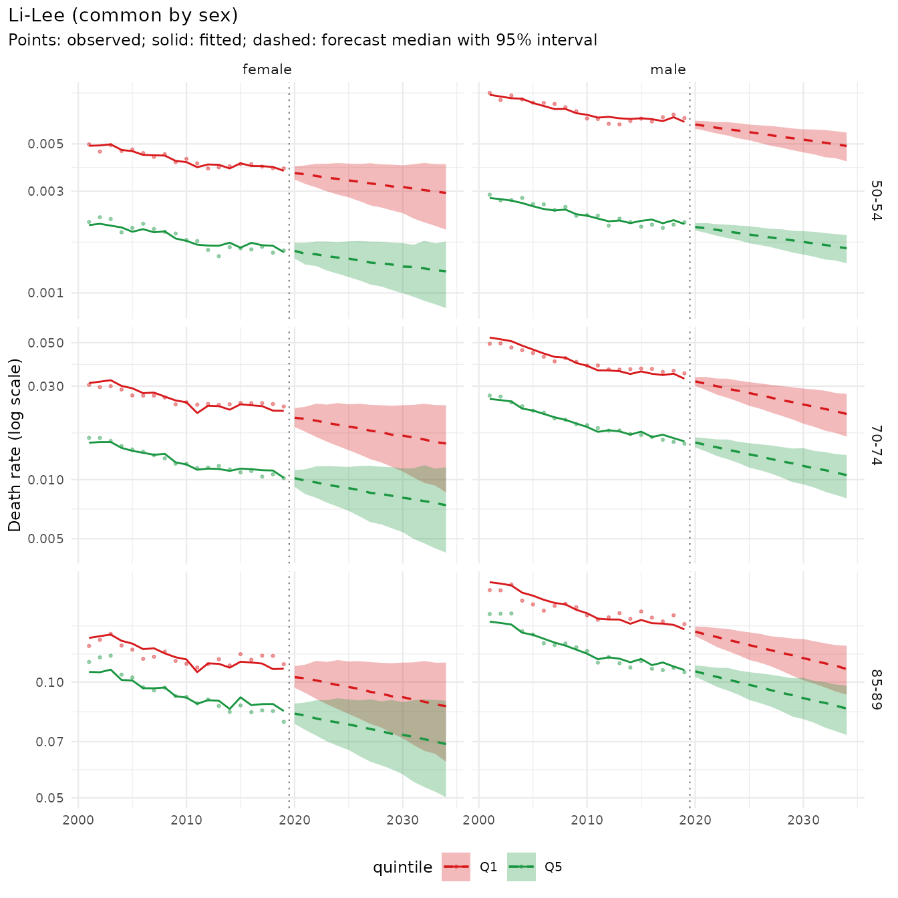
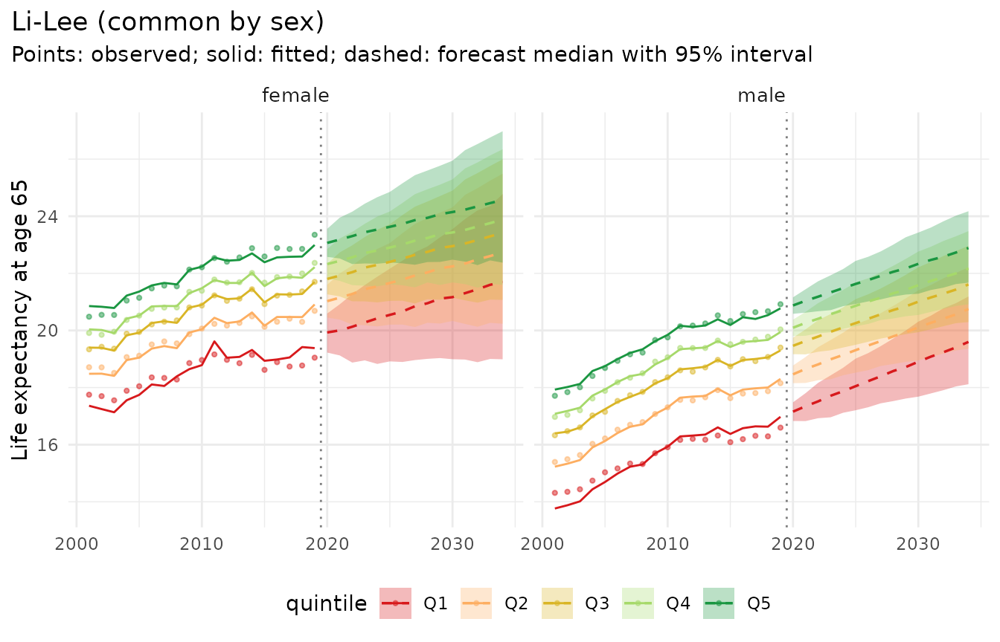
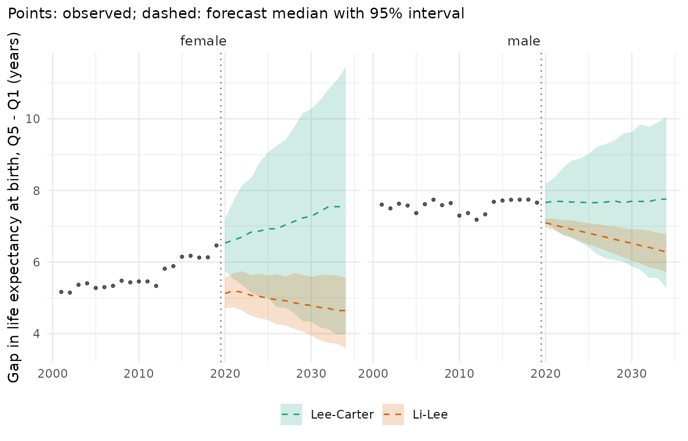
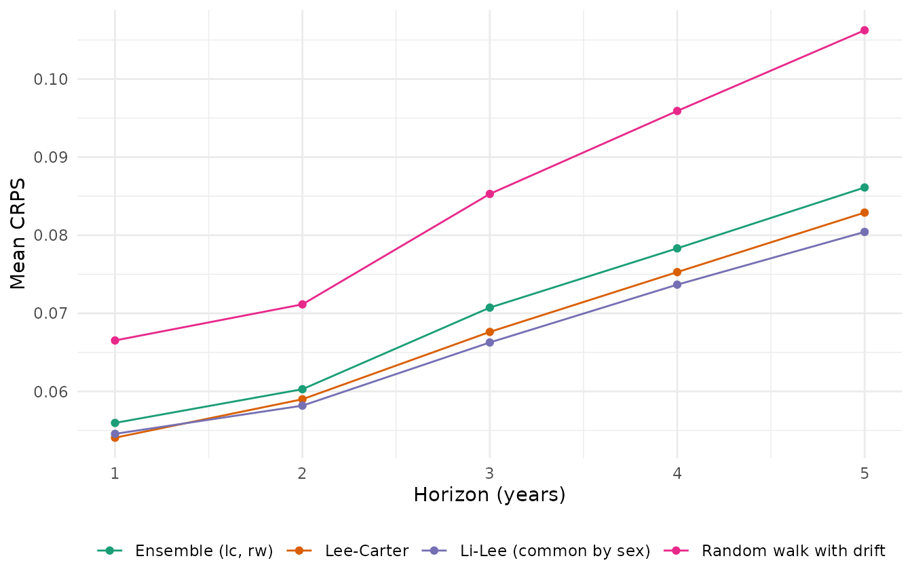
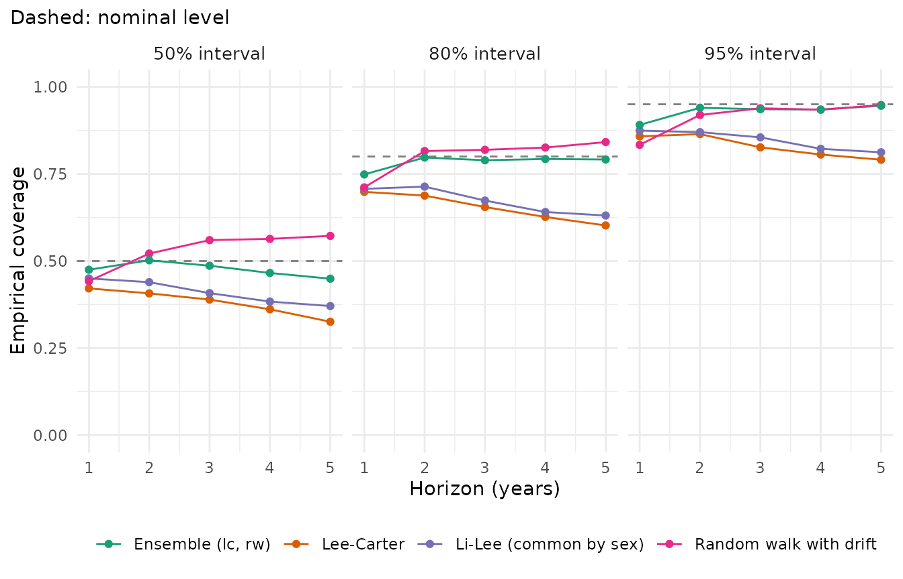

mortensor is experimental software written largely with AI coding assistants (“vibe-coded”). Use it at your own risk and check results independently.
mortensor builds probabilistic mortality forecasts from data observed at different granularities. A forecast is assembled from interchangeable parts:
-
data in their original resolution
(
mt_data()), prepared with general steps: subsets of ages, years and strata (mt_subset()), aggregation layers such as deprivation quintiles or cause groups (mt_group_levels()), exposures from populations (mt_as_exposure()), -
harmonisation onto a modelling grid
(
mt_ungroup(),mt_smooth(),mt_regroup()), bundled as a preprocessing pipeline (mt_prep()), - a model (
lee_carter(),li_lee(),rwd(),tucker3(),apc_bayes(), …), fitted withmt_fit()and forecast withmt_forecast()as simulated paths, -
derived quantities computed path by path
(
life_expectancy(),prob_dying(),asr()) and their decomposition by age, cause and subgroup (mt_decompose()), and -
evaluation with rolling-origin backtests
(
mt_backtest(),mt_score()).
This vignette forecasts mortality in England by sex and deprivation.
Data
ons_data holds death registrations and mid-year
populations by sex, 5-year age group and decile of the Index of Multiple
Deprivation (IMD), England 2001-2019, from an ONS ad hoc release
(Source: Office for National Statistics licensed under the Open
Government Licence v3.0). Decile 1 is the most deprived.
head(ons_data[, 1:8])
#> year sex age_group imd_decile imd_version population all_causes
#> 1 2001 female <1 1 2004 35977 307
#> 2 2001 female <1 2 2004 32042 234
#> 3 2001 female <1 3 2004 28759 169
#> 4 2001 female <1 4 2004 27016 152
#> 5 2001 female <1 5 2004 25451 89
#> 6 2001 female <1 6 2004 24814 94
#> breast_cancer
#> 1 0
#> 2 0
#> 3 0
#> 4 0
#> 5 0
#> 6 0mt_data() reads tables in long format, one row per cell:
here the all-cause deaths and the mid-year populations, with sex and IMD
decile as stratum variables (by). Age groups such as
"<1", "01-04" and "90+" are
recognised. mt_as_exposure() takes the mid-year population
as the person-years at risk:
x <- mt_data(deaths = ons_data, population = ons_data, by = c("sex", "imd_decile"), age = "age_group",
value = c(deaths = "all_causes", population = "population"))
x <- mt_as_exposure(x, type = "midyear")Deciles are combined to quintiles with
mt_group_levels(), which adds an aggregation layer to any
stratum variable (cause groups, regions, deprivation): deaths and
exposures of deciles 1 and 2 are summed to quintile 1, and so on. A
function maps the deciles to the quintiles, and name labels
the new layer:
x <- mt_group_levels(x, "imd_decile", function(d) paste0("Q", ceiling(as.numeric(d) / 2)), name = "quintile")
x
#> <mt_data> 10 strata by sex, quintile, omega = 110
#> deaths mixed widths (1,4,5) 0-89, 90+; periods 2001-2019 (width 1); 3800 cells
#> exposure mixed widths (1,4,5) 0-89, 90+; periods 2001-2019 (width 1); 3800 cells
#> population mixed widths (1,4,5) 0-89, 90+; periods 2001-2019 (width 1); 3800 cells
#> grid <mt_axis: age, 20 intervals> 0 1-4 5-9 10-14 ... 80-84 85-89 90+
#> <mt_axis: period, 19 intervals> 2001 2002 2003 2004 ... 2017 2018 2019
mt_strata(x)
#> stratum sex quintile label
#> <int> <char> <char> <char>
#> 1: 1 female Q1 female.Q1
#> 2: 2 female Q2 female.Q2
#> 3: 3 female Q3 female.Q3
#> 4: 4 female Q4 female.Q4
#> 5: 5 female Q5 female.Q5
#> 6: 6 male Q1 male.Q1
#> 7: 7 male Q2 male.Q2
#> 8: 8 male Q3 male.Q3
#> 9: 9 male Q4 male.Q4
#> 10: 10 male Q5 male.Q5The deciles are defined by the IMD version current at the time of
registration, so areas move between deciles four times in this period
(column imd_version of ons_data: 2004, 2007,
2010, 2015 and 2019).
mt_validate() checks plausibility (deaths without
exposure, rates above 1, missing values, strata without deaths or
exposures, levels that look like totals, gaps in the grid, and the sums
of aggregate strata):
mt_validate(x)
#> <mt_validation> no findingsObserved life expectancy at birth shows the deprivation gradient:
e0 <- life_expectancy(x)
dcast(e0[period %in% c(2001, 2010, 2019)], sex + quintile ~ period, value.var = "q0.5")[
, lapply(.SD, function(v) if (is.numeric(v)) round(v, 1) else v)]
#> Key: <sex, quintile>
#> sex quintile 2001 2010 2019
#> <char> <char> <num> <num> <num>
#> 1: female Q1 77.7 79.5 79.8
#> 2: female Q2 79.7 81.6 82.5
#> 3: female Q3 81.0 82.9 83.9
#> 4: female Q4 82.0 83.8 85.0
#> 5: female Q5 82.8 84.9 86.3
#> 6: male Q1 71.6 74.5 75.4
#> 7: male Q2 74.7 77.3 78.6
#> 8: male Q3 76.7 79.2 80.6
#> 9: male Q4 77.9 80.6 81.8
#> 10: male Q5 79.2 81.8 83.1On data, life_expectancy() describes the observed rates
with Poisson intervals (columns q0.025 and
q0.975); the table shows the medians.
Harmonisation
The data have 5-year age groups (with <1,
1-4 and 90+), and the grid is set to them, so
models can be fitted directly. When single years of age are needed,
mt_ungroup() estimates single-year deaths and exposures
with the penalized composite link model; deaths are ungrouped as rates
with the exposures as offset, and the estimates add up to the observed
totals.
xs <- mt_subset(x, periods = c(2019, 2019))
u <- mt_ungroup(xs)
u
#> <mt_data> 10 strata by sex, quintile, omega = 110
#> deaths single years 0-89, 90+; periods 2019-2019 (width 1); 910 cells
#> exposure single years 0-89, 90+; periods 2019-2019 (width 1); 910 cells
#> population mixed widths (1,4,5) 0-89, 90+; periods 2019-2019 (width 1); 200 cells
#> grid <mt_axis: age, 91 intervals> 0 1 2 3 ... 88 89 90+
#> <mt_axis: period, 1 interval> 2019The grid keeps the open interval 90+ of the data: splitting it into single years would rest on its total alone.
mt_plot_ungroup(xs, u, period = 2019, strata = c("female.Q1", "female.Q5"))
In a forecasting pipeline, ungrouping is a preprocessing step
(mt_prep(step_ungroup())), so that backtests refit it on
every training window. Whether it improves forecasts is a question for
the backtest below; here we model the 5-year groups.
Fitting and forecasting
lee_carter() fits one model per stratum.
li_lee() adds a common trend: with
common_by = "sex" the five quintiles of each sex share one
trend, and their deviations from it follow stationary processes, so the
gaps between quintiles can neither vanish nor explode.
fit_lc <- mt_fit(lee_carter(), x)
fit_ll <- mt_fit(li_lee(common_by = "sex"), x)
fc_ll <- mt_forecast(fit_ll, h = 15, n_draws = 500, seed = 1)
fc_ll
#> <mt_draws> Li-Lee (common by sex); origin 2019; 20 ages x 15 periods (2020-2034) x 10 strata x 500 drawsThe forecast holds 500 simulated paths per age, year and stratum.
mt_summarise() returns means and quantiles:
s <- mt_summarise(fc_ll)
s[age == "70-74" & period %in% c(2020, 2034) & quintile %in% c("Q1", "Q5"),
.(sex, quintile, period, q0.025, q0.5, q0.975)]
#> sex quintile period q0.025 q0.5 q0.975
#> <char> <char> <num> <num> <num> <num>
#> 1: female Q1 2020 0.018573773 0.020674320 0.02313683
#> 2: female Q1 2034 0.008592021 0.015289518 0.02397031
#> 3: female Q5 2020 0.009180348 0.010173502 0.01118482
#> 4: female Q5 2034 0.004239325 0.007402958 0.01156942
#> 5: male Q1 2020 0.030048397 0.031722143 0.03336626
#> 6: male Q1 2034 0.016567964 0.021632564 0.02741178
#> 7: male Q5 2020 0.014600171 0.015474987 0.01643349
#> 8: male Q5 2034 0.008034508 0.010540826 0.01336269
mt_plot_forecast(fc_ll, ages = c("50-54", "70-74", "85-89"),
strata = c("female.Q1", "female.Q5", "male.Q1", "male.Q5"))
Derived quantities
Life expectancy is computed for every path, so its interval reflects the joint uncertainty of all ages:
e0_fc <- life_expectancy(fc_ll, at = 0)
e0_fc[period %in% c(2020, 2034) & quintile %in% c("Q1", "Q5"), .(sex, quintile, period, q0.025, q0.5, q0.975)]
#> sex quintile period q0.025 q0.5 q0.975
#> <char> <char> <num> <num> <num> <num>
#> 1: female Q1 2020 79.98232 80.87661 81.72902
#> 2: female Q1 2034 79.70041 83.21191 87.14373
#> 3: female Q5 2020 85.41720 85.99727 86.60943
#> 4: female Q5 2034 85.19136 87.84302 90.69563
#> 5: male Q1 2020 75.64466 76.10026 76.54680
#> 6: male Q1 2034 77.41158 79.41642 81.55305
#> 7: male Q5 2020 82.83987 83.19343 83.52941
#> 8: male Q5 2034 84.19037 85.70021 87.26512
mt_plot_life_expectancy(fc_ll, at = 65)
Because the draws are paths, differences between strata carry their
own uncertainty. mt_contrast() computes the gap in life
expectancy at birth between the least (Q5) and the most deprived
quintile (Q1), path by path, for Li-Lee and for separate Lee-Carter
models, and for the observed years (with Poisson intervals):
fc_lc <- mt_forecast(fit_lc, h = 15, n_draws = 500, seed = 1)
gaps <- rbind(mt_contrast(fc_ll, var = "quintile", ref = "Q1", at = 0)[level == "Q5"][, model := "Li-Lee"],
mt_contrast(fc_lc, var = "quintile", ref = "Q1", at = 0)[level == "Q5"][, model := "Lee-Carter"])
gaps[period %in% c(2020, 2034), .(model, sex, period, q0.025, q0.5, q0.975)]
#> model sex period q0.025 q0.5 q0.975
#> <char> <char> <num> <num> <num> <num>
#> 1: Li-Lee female 2020 4.713791 5.125331 5.562037
#> 2: Li-Lee female 2034 3.595500 4.647554 5.553060
#> 3: Li-Lee male 2020 6.974062 7.094211 7.206043
#> 4: Li-Lee male 2034 5.715001 6.284249 6.791622
#> 5: Lee-Carter female 2020 5.753233 6.531984 7.208464
#> 6: Lee-Carter female 2034 3.993687 7.528309 11.447951
#> 7: Lee-Carter male 2020 7.106714 7.663175 8.183264
#> 8: Lee-Carter male 2034 5.285351 7.757173 10.046574
observed_gap <- mt_contrast(x, var = "quintile", ref = "Q1", at = 0)[level == "Q5"]
library(ggplot2)
ggplot(gaps, aes(period)) +
geom_ribbon(aes(ymin = q0.025, ymax = q0.975, fill = model), alpha = 0.2) +
geom_line(aes(y = q0.5, colour = model), linetype = "dashed") +
geom_point(data = observed_gap, aes(y = q0.5), size = 0.8, alpha = 0.6) +
geom_vline(xintercept = 2019.5, linetype = "dotted", colour = "grey50") +
facet_wrap(~ sex) +
scale_colour_mortensor(type = "categorical") +
scale_fill_mortensor(type = "categorical") +
labs(x = NULL, y = "Gap in life expectancy at birth, Q5 - Q1 (years)", colour = NULL, fill = NULL,
subtitle = "Points: observed; dashed: forecast median with 95% interval") +
theme_mortensor()
The two models make different assumptions, and the data cannot decide
between them. The observed gap was stable for men and widened for women,
with a step in 2013, when the deciles switched to IMD 2015. Separate
Lee-Carter models extrapolate each quintile’s own trend, so the female
gap keeps widening, with wide intervals. Li-Lee lets the quintiles
deviate from a common trend only through stationary processes, so gaps
return towards their average of the training years. Its forecasts also
start from the fitted rates of 2019, which for women in Q1 are about 0.4
years of life expectancy above the observed ones.
li_lee(jump_off = "observed") removes this step, but in
backtests on these data it forecast worse (CRPS 0.071 against
0.067).
Other quantities work the same way, for example the probability of dying between ages 40 and 75 and age-standardised rates (European Standard Population 2013):
prob_dying(fc_ll, from = 40, to = 75)[period == 2034 & quintile %in% c("Q1", "Q5"),
.(sex, quintile, q0.025, q0.5, q0.975)]
#> sex quintile q0.025 q0.5 q0.975
#> <char> <char> <num> <num> <num>
#> 1: female Q1 0.12793903 0.19597011 0.2711846
#> 2: female Q5 0.06053106 0.09411311 0.1336645
#> 3: male Q1 0.23357345 0.28033008 0.3287580
#> 4: male Q5 0.10323963 0.12711076 0.1529341
asr(fc_ll)[period == 2034 & quintile %in% c("Q1", "Q5"), .(sex, quintile, q0.025, q0.5, q0.975)]
#> sex quintile q0.025 q0.5 q0.975
#> <char> <char> <num> <num> <num>
#> 1: female Q1 555.5445 802.2508 1088.1373
#> 2: female Q5 388.2925 535.1839 706.5104
#> 3: male Q1 892.6927 1064.9272 1250.9199
#> 4: male Q5 566.6843 666.9886 774.8543Honest backtests
mt_backtest() cuts the data at each forecast origin,
refits the preprocessing and the model on the training window, and
scores predictive draws against the observed deaths. Here the forecasts
from origins 2008 to 2014 are scored on 2009 to 2019.
origins <- 2008:2014
specs <- list(lee_carter(), li_lee(common_by = "sex"), rwd(),
ensemble(lc = lee_carter(), rw = rwd()))
bt <- rbindlist(lapply(specs, function(sp) mt_backtest(sp, x, origins = origins, h = 5, n_draws = 200)))
mt_score(bt, by = "model")
#> model crps wis mae mase cov50
#> <char> <num> <num> <num> <num> <num>
#> 1: Lee-Carter 0.06777174 0.06095879 0.09395225 1.357161 0.3810000
#> 2: Li-Lee (common by sex) 0.06661856 0.05973344 0.09266528 1.447387 0.4102857
#> 3: Random walk with drift 0.08502155 0.07617632 0.11484454 1.530626 0.5318571
#> 4: Ensemble (lc, rw) 0.07028030 0.06304565 0.09627202 1.368822 0.4757143
#> cov80 cov95 pit_mean n unit
#> <num> <num> <num> <int> <char>
#> 1: 0.6540000 0.8290000 0.5552149 7000 log rate
#> 2: 0.6731429 0.8467143 0.5585903 7000 log rate
#> 3: 0.8027143 0.9147143 0.5763921 7000 log rate
#> 4: 0.7838571 0.9294286 0.5662695 7000 log rateLower CRPS and WIS are better; cov50, cov80
and cov95 are the shares of observations inside the central
50%, 80% and 95% intervals. Li-Lee is the most accurate; like Lee-Carter
its intervals are too narrow, while the mixture of Lee-Carter and the
random walk is close to nominal coverage at a small cost in
accuracy.
mt_plot_scores(bt, by = "horizon")
mt_plot_coverage(bt)
Where next
- “Forecasting mortality by deprivation quintile”: gaps between quintiles, backtests by quintile, calibration of the intervals on the last ten years.
- “Coherent forecasts: what reconciliation changes”: forecasts that add up over strata (quintiles and sexes to England), method by method.
- “Decomposing differences in life expectancy”: the ages, causes and subgroup composition behind gaps and changes, observed and forecast.
- “Causes of death by deprivation”: cause-specific forecasts that add up to all causes, on the same ONS data.
- “Coherent forecasts by sex, region and cause”: the 16 German Laender, with suppressed cells, pooling and smoothing of sparse cause-specific data.
- “Your own data, from CSV to report”: reading official exports with their peculiarities, and a report from them.
- “Data at different granularities: ungrouping HMD data”: ungrouping and its accuracy on HMD data with known single-year rates.
- “Forecasting and backtesting with HMD data”, “Bayesian age-period-cohort models with bamp” and “Comparison with demography, bamp and StMoMo”.
- “Model reference” and “Frequently asked questions”.